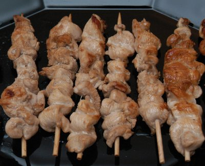

| Zutaten für 12 Spiessli: | |
| 3 Tl | Limettensaft |
| 3 Tl | Sesam- oder Erdnussöl |
| 3 El | helle (light Sojasauce) |
| 600 g | Pouletbrüstli |
| 12 | Holzspiesschen |
| Erdnussöl zum Braten | |
Zubereitungszeit ca. 25 Minuten, Marinieren: ca. 2 Stunden
Limettensaft, Öl und Sojasauce in einer Schüssel gut verrühren.
Fleisch längs in ca. 5 mm breite Streifen schneiden.
Fleisch wellenförmig an Spiesschen stecken, mit der Marinade bestreichen, zugedeckt im Kühlschrank ca. 2 Stunden marinieren, restliche Marinade beiseite stellen.
Ofen auf 60°C vorheizen, Platte und Teller vorwärmen. Marinade abstreifen. Öl in einer Bratpfanne heiss werden lassen. Spiessli portionenweise bei mittlerer Hitze ca. 4 Minuten braten, 1-2 mal mit der beiseite gestellten Marinade bestreichen, warm stellen.
Dazu passt unbedingt: Erdnusssauce
Betty Bossi Zeitung, 02, 2005 Seite 11
Gelang Anfang August 2008 hervorragend. RE
@LINKBACK_TAG@ @WAKELOCK@